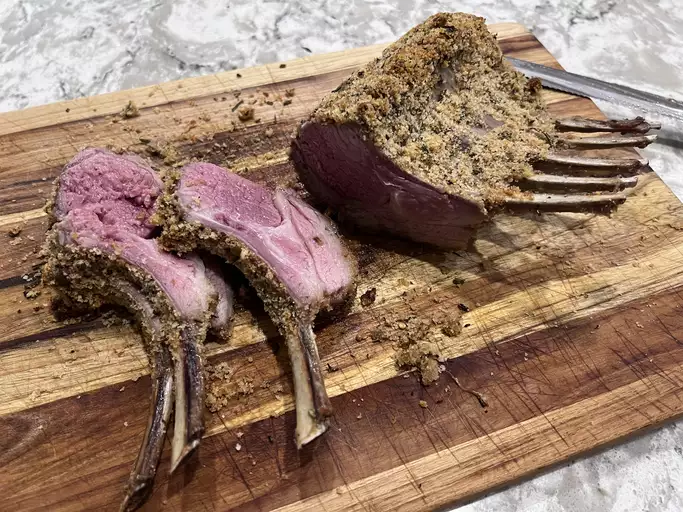

Lamb Ribs

Description
A rack of lamb is topped with a herby crust before it's roasted.
I have been using this recipe for a long time, and always enjoy making it.
You can also do the same thing with beef or pork.
This roasted rack of lamb recipe will impress even the toughest of critics.
Ingredients
- Bread crumbs:Use store-bought or make your own bread crumbs
- Seasonings:This rack of lamb is seasoned with garlic, rosemary, salt, and black pepper.
- Olive oil:Olive oil locks in moisture, preventing the meat from drying out.
- Lamb: If you can, have your butcher trim and french (remove excess meat, fat and cartilage) the rack of lamb so you don’t have to do it at home.
- Mustard:Dijon mustard gives the seasoned bread crumbs something to stick to. Plus, it adds irresistible flavor.